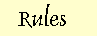
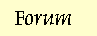
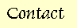

Events
Trinity - September 2008After the massacre and demon summoning at Grunwald Buchte, the Order has declared the vampire lord Mephistopheles as public enemy number one. The message is being spread to every corner of Christendom, and every member of the Order of St. Wolfgang is summoned to fight the undead prince.
But Lord Mephistopheles has crossed the sea to Daneland, the land which spawns the marauding Vikings. The fight leads across the sea to the heart of Viking country where, it is feared, the vampire lord seeks to raise a heathen army with which to openly fight the Church, and lay waste to Christendom.
And with four Order members kidnapped by the Danes, the agents of Wolfgang have no time to lose, lest it be too late for a rescue...
The stakes are higher than ever before - will you join the hunt? Will you risk all for Christendom?
Event Details
Start: 7:30pm, Friday 26th September
Finish: 2pm, Sunday 28th September
Where: Camp Maynard
Cost: Players - $85
Players (nzLARPS members) - $75
All players who pay before September 10th receive a $10 discount (this stacks with the nzLARPS discount)
Crew - $35
Payment Details: Account name: NZLARPS
Account: 02-0290-0086913-00
Bank: BNZ 262 Queen St
Reference: your name (Surname, initial).
Particulars: 'WOLFGANG'
Previous Events
Pactum Serva - August 2007
The Order of St. Wolfgang gathered at the town under the rulership of Lord Legrand to find the evil disturbing the township. Pierre Legrand, the Lord's son, was revealed to be a dark magician working for a vampire lord, seeking the two amulets which contained the lost souls of a Queen and a King. The Order successfully defeated Pierre Legrand and the minions of the vampire lord, but alas, the vampire lord himself escaped. The Order returned the two lost souls to the grace of God and peace was restored to the town.
Game Discussion on Diatribe
Photos from Ryan Paddy, from Craig Neilson and others
Seven Falls - May 2008
The Order of St. Wolfgang answered an urgent call to investigate the evil at the small hamlet of Grunwald Buchte along the northern coast of the Holy Roman Empire. Alas, the Order arrived too late, and found that the vampire lord from their previous adventure had massacred the village. The Order faced tremendous challenges as the lost angels drained them off faith, the Cardinals from Rome laughed at their stories of vampires and tried them for witchcraft, and worst of all, three witches loyal to the vampire lord Mephistopheles summoned a demon to the village. But with their unity and strength of faith, the Order released the angels to their damnation, and sent the demon Tartarus back to hell!
Game Discussion on Diatribe
Photos from Judit Klein and others